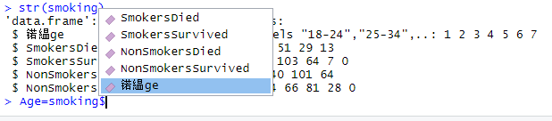

Chapter 17 FAQs
Why am I getting weird variable names?

Unfortunately this can happen on windows computers.You can fix it with the following code
This code looks at the column names, picks the first one, and then reassigns it to Age.
How do I produce a residual plot with missing values in data?
library(ggplot2)
help(msleep)
plot(sleep$bodywt, sleep$brainwt)
L = lm(sleep$brainwt ~ sleep$bodywt)
summary(L)
abline(L)
# Correlation (with missing values)
length(sleep$bodywt)
length(sleep$brainwt)
cor(sleep$bodywt, sleep$brainwt, use = "complete.obs")
# Residual plot (with missing values)
length(sleep$bodywt)
length(L$residuals)
residuals1 = resid(lm(sleep$brainwt ~ sleep$bodywt, na.action=na.exclude))
length(residuals1)
plot(sleep$bodywt,residuals1)How can I eliminate NAs from my dataset?
The function drop_na() from the dplyr package (a subset of the tidyverse package) allows you to remove rows from a dataset that contain NAs.
We will use the msleep data set for this example.
First lets find out how many NAs are in each row of the dataset:
## [1] 83 11## name genus vore order conservation sleep_total
## 0 0 7 0 29 0
## sleep_rem sleep_cycle awake brainwt bodywt
## 22 51 0 27 0By using the drop_na function we can see all rows with an NA in it was removed. This took our row count from 83 to 20 complete entries.
## [1] 20 11## name genus vore order conservation sleep_total
## 0 0 0 0 0 0
## sleep_rem sleep_cycle awake brainwt bodywt
## 0 0 0 0 0However, what if we are only interested in deleting rows where brainwt is NA? This could be the case with the large datasets used in the projects, with a number of redundant columns. In some cases deleting all NAs results in very few observations remaining, so we can be more selective about the rows we remove. If for example, sleep_cycle is used nowhere in our analysis, it would be unnecessary to remove rows when sleep_cycle is NA.
You can selectively delete NAs from select rows using the code below:
What does %>% mean?
%>% means “pipe”, and it takes the output of the previous function and puts it into (“pipes” it into) the next function. see the below code for examples:
# Previous Notation
sum(c(1,2,3))
# Pipe Notation
c(1,2,3) %>% sum()
# Previous Notation
cos(sin(pi))
#Pipe Notation
pi %>% sin() %>% cos()This method allows us to read code from left to right rather than inside out. The shortcut for a pipe on windows in Rstudio should be set to Ctrl + Shift + M by default (Cmd + Shift + M for macbook users).
Within ggplot we can use this to pipe data into our ggplot argument like so:
For more information see here
Error: … could not find function “%>%”
The pipe operator is apart of the tidyverse, thus if you encounter this message it means you have not loaded the tidyverse library in your document. Resolve by loading the library at the top of your document like so:
How do I select only a subset of my dataset that matches a certain criteria?
When we have a large data set, sometimes we only want to look at a subset of it for our analysis. To do this we will use the filter function from the dplyr library.
Filtering for a single condition
The below code filters the data for only the Setosa species and saves the data into a data frame called iris_setosa.
library(tidyverse) # The tidyverse package includes the dplyr package
iris_setosa = iris %>% filter(Species == "setosa")This is what the resulting data frame looks like, as you can see it only contains entries that are of the species Setosa.
Show Data
| Sepal.Length | Sepal.Width | Petal.Length | Petal.Width | Species |
|---|---|---|---|---|
| 5.1 | 3.5 | 1.4 | 0.2 | setosa |
| 4.9 | 3.0 | 1.4 | 0.2 | setosa |
| 4.7 | 3.2 | 1.3 | 0.2 | setosa |
| 4.6 | 3.1 | 1.5 | 0.2 | setosa |
| 5.0 | 3.6 | 1.4 | 0.2 | setosa |
| 5.4 | 3.9 | 1.7 | 0.4 | setosa |
| 4.6 | 3.4 | 1.4 | 0.3 | setosa |
| 5.0 | 3.4 | 1.5 | 0.2 | setosa |
| 4.4 | 2.9 | 1.4 | 0.2 | setosa |
| 4.9 | 3.1 | 1.5 | 0.1 | setosa |
| 5.4 | 3.7 | 1.5 | 0.2 | setosa |
| 4.8 | 3.4 | 1.6 | 0.2 | setosa |
| 4.8 | 3.0 | 1.4 | 0.1 | setosa |
| 4.3 | 3.0 | 1.1 | 0.1 | setosa |
| 5.8 | 4.0 | 1.2 | 0.2 | setosa |
| 5.7 | 4.4 | 1.5 | 0.4 | setosa |
| 5.4 | 3.9 | 1.3 | 0.4 | setosa |
| 5.1 | 3.5 | 1.4 | 0.3 | setosa |
| 5.7 | 3.8 | 1.7 | 0.3 | setosa |
| 5.1 | 3.8 | 1.5 | 0.3 | setosa |
| 5.4 | 3.4 | 1.7 | 0.2 | setosa |
| 5.1 | 3.7 | 1.5 | 0.4 | setosa |
| 4.6 | 3.6 | 1.0 | 0.2 | setosa |
| 5.1 | 3.3 | 1.7 | 0.5 | setosa |
| 4.8 | 3.4 | 1.9 | 0.2 | setosa |
| 5.0 | 3.0 | 1.6 | 0.2 | setosa |
| 5.0 | 3.4 | 1.6 | 0.4 | setosa |
| 5.2 | 3.5 | 1.5 | 0.2 | setosa |
| 5.2 | 3.4 | 1.4 | 0.2 | setosa |
| 4.7 | 3.2 | 1.6 | 0.2 | setosa |
| 4.8 | 3.1 | 1.6 | 0.2 | setosa |
| 5.4 | 3.4 | 1.5 | 0.4 | setosa |
| 5.2 | 4.1 | 1.5 | 0.1 | setosa |
| 5.5 | 4.2 | 1.4 | 0.2 | setosa |
| 4.9 | 3.1 | 1.5 | 0.2 | setosa |
| 5.0 | 3.2 | 1.2 | 0.2 | setosa |
| 5.5 | 3.5 | 1.3 | 0.2 | setosa |
| 4.9 | 3.6 | 1.4 | 0.1 | setosa |
| 4.4 | 3.0 | 1.3 | 0.2 | setosa |
| 5.1 | 3.4 | 1.5 | 0.2 | setosa |
| 5.0 | 3.5 | 1.3 | 0.3 | setosa |
| 4.5 | 2.3 | 1.3 | 0.3 | setosa |
| 4.4 | 3.2 | 1.3 | 0.2 | setosa |
| 5.0 | 3.5 | 1.6 | 0.6 | setosa |
| 5.1 | 3.8 | 1.9 | 0.4 | setosa |
| 4.8 | 3.0 | 1.4 | 0.3 | setosa |
| 5.1 | 3.8 | 1.6 | 0.2 | setosa |
| 4.6 | 3.2 | 1.4 | 0.2 | setosa |
| 5.3 | 3.7 | 1.5 | 0.2 | setosa |
| 5.0 | 3.3 | 1.4 | 0.2 | setosa |
Filtering for multiple conditions
We can also use the filter function to filter for multiple conditions by separating the conditions with a comma. The code below selects from the iris data only the entries that are of the Setosa species and have a petal length greater than 1.5 and saves the results in a data frame called iris_filtered.
And this is the resulting data
Show Data
| Sepal.Length | Sepal.Width | Petal.Length | Petal.Width | Species |
|---|---|---|---|---|
| 5.4 | 3.9 | 1.7 | 0.4 | setosa |
| 4.8 | 3.4 | 1.6 | 0.2 | setosa |
| 5.7 | 3.8 | 1.7 | 0.3 | setosa |
| 5.4 | 3.4 | 1.7 | 0.2 | setosa |
| 5.1 | 3.3 | 1.7 | 0.5 | setosa |
| 4.8 | 3.4 | 1.9 | 0.2 | setosa |
| 5.0 | 3.0 | 1.6 | 0.2 | setosa |
| 5.0 | 3.4 | 1.6 | 0.4 | setosa |
| 4.7 | 3.2 | 1.6 | 0.2 | setosa |
| 4.8 | 3.1 | 1.6 | 0.2 | setosa |
| 5.0 | 3.5 | 1.6 | 0.6 | setosa |
| 5.1 | 3.8 | 1.9 | 0.4 | setosa |
| 5.1 | 3.8 | 1.6 | 0.2 | setosa |
Filtering for multiple values of a single variable
The code below filters the iris data for entries which are either the Setosa or Virginica species using the %in% keyword. This method is not limited to only two values, you may list as many values which you want to filter for as you like.
Show Data
| Sepal.Length | Sepal.Width | Petal.Length | Petal.Width | Species |
|---|---|---|---|---|
| 5.1 | 3.5 | 1.4 | 0.2 | setosa |
| 4.9 | 3.0 | 1.4 | 0.2 | setosa |
| 4.7 | 3.2 | 1.3 | 0.2 | setosa |
| 4.6 | 3.1 | 1.5 | 0.2 | setosa |
| 5.0 | 3.6 | 1.4 | 0.2 | setosa |
| 5.4 | 3.9 | 1.7 | 0.4 | setosa |
| 4.6 | 3.4 | 1.4 | 0.3 | setosa |
| 5.0 | 3.4 | 1.5 | 0.2 | setosa |
| 4.4 | 2.9 | 1.4 | 0.2 | setosa |
| 4.9 | 3.1 | 1.5 | 0.1 | setosa |
| 5.4 | 3.7 | 1.5 | 0.2 | setosa |
| 4.8 | 3.4 | 1.6 | 0.2 | setosa |
| 4.8 | 3.0 | 1.4 | 0.1 | setosa |
| 4.3 | 3.0 | 1.1 | 0.1 | setosa |
| 5.8 | 4.0 | 1.2 | 0.2 | setosa |
| 5.7 | 4.4 | 1.5 | 0.4 | setosa |
| 5.4 | 3.9 | 1.3 | 0.4 | setosa |
| 5.1 | 3.5 | 1.4 | 0.3 | setosa |
| 5.7 | 3.8 | 1.7 | 0.3 | setosa |
| 5.1 | 3.8 | 1.5 | 0.3 | setosa |
| 5.4 | 3.4 | 1.7 | 0.2 | setosa |
| 5.1 | 3.7 | 1.5 | 0.4 | setosa |
| 4.6 | 3.6 | 1.0 | 0.2 | setosa |
| 5.1 | 3.3 | 1.7 | 0.5 | setosa |
| 4.8 | 3.4 | 1.9 | 0.2 | setosa |
| 5.0 | 3.0 | 1.6 | 0.2 | setosa |
| 5.0 | 3.4 | 1.6 | 0.4 | setosa |
| 5.2 | 3.5 | 1.5 | 0.2 | setosa |
| 5.2 | 3.4 | 1.4 | 0.2 | setosa |
| 4.7 | 3.2 | 1.6 | 0.2 | setosa |
| 4.8 | 3.1 | 1.6 | 0.2 | setosa |
| 5.4 | 3.4 | 1.5 | 0.4 | setosa |
| 5.2 | 4.1 | 1.5 | 0.1 | setosa |
| 5.5 | 4.2 | 1.4 | 0.2 | setosa |
| 4.9 | 3.1 | 1.5 | 0.2 | setosa |
| 5.0 | 3.2 | 1.2 | 0.2 | setosa |
| 5.5 | 3.5 | 1.3 | 0.2 | setosa |
| 4.9 | 3.6 | 1.4 | 0.1 | setosa |
| 4.4 | 3.0 | 1.3 | 0.2 | setosa |
| 5.1 | 3.4 | 1.5 | 0.2 | setosa |
| 5.0 | 3.5 | 1.3 | 0.3 | setosa |
| 4.5 | 2.3 | 1.3 | 0.3 | setosa |
| 4.4 | 3.2 | 1.3 | 0.2 | setosa |
| 5.0 | 3.5 | 1.6 | 0.6 | setosa |
| 5.1 | 3.8 | 1.9 | 0.4 | setosa |
| 4.8 | 3.0 | 1.4 | 0.3 | setosa |
| 5.1 | 3.8 | 1.6 | 0.2 | setosa |
| 4.6 | 3.2 | 1.4 | 0.2 | setosa |
| 5.3 | 3.7 | 1.5 | 0.2 | setosa |
| 5.0 | 3.3 | 1.4 | 0.2 | setosa |
| 6.3 | 3.3 | 6.0 | 2.5 | virginica |
| 5.8 | 2.7 | 5.1 | 1.9 | virginica |
| 7.1 | 3.0 | 5.9 | 2.1 | virginica |
| 6.3 | 2.9 | 5.6 | 1.8 | virginica |
| 6.5 | 3.0 | 5.8 | 2.2 | virginica |
| 7.6 | 3.0 | 6.6 | 2.1 | virginica |
| 4.9 | 2.5 | 4.5 | 1.7 | virginica |
| 7.3 | 2.9 | 6.3 | 1.8 | virginica |
| 6.7 | 2.5 | 5.8 | 1.8 | virginica |
| 7.2 | 3.6 | 6.1 | 2.5 | virginica |
| 6.5 | 3.2 | 5.1 | 2.0 | virginica |
| 6.4 | 2.7 | 5.3 | 1.9 | virginica |
| 6.8 | 3.0 | 5.5 | 2.1 | virginica |
| 5.7 | 2.5 | 5.0 | 2.0 | virginica |
| 5.8 | 2.8 | 5.1 | 2.4 | virginica |
| 6.4 | 3.2 | 5.3 | 2.3 | virginica |
| 6.5 | 3.0 | 5.5 | 1.8 | virginica |
| 7.7 | 3.8 | 6.7 | 2.2 | virginica |
| 7.7 | 2.6 | 6.9 | 2.3 | virginica |
| 6.0 | 2.2 | 5.0 | 1.5 | virginica |
| 6.9 | 3.2 | 5.7 | 2.3 | virginica |
| 5.6 | 2.8 | 4.9 | 2.0 | virginica |
| 7.7 | 2.8 | 6.7 | 2.0 | virginica |
| 6.3 | 2.7 | 4.9 | 1.8 | virginica |
| 6.7 | 3.3 | 5.7 | 2.1 | virginica |
| 7.2 | 3.2 | 6.0 | 1.8 | virginica |
| 6.2 | 2.8 | 4.8 | 1.8 | virginica |
| 6.1 | 3.0 | 4.9 | 1.8 | virginica |
| 6.4 | 2.8 | 5.6 | 2.1 | virginica |
| 7.2 | 3.0 | 5.8 | 1.6 | virginica |
| 7.4 | 2.8 | 6.1 | 1.9 | virginica |
| 7.9 | 3.8 | 6.4 | 2.0 | virginica |
| 6.4 | 2.8 | 5.6 | 2.2 | virginica |
| 6.3 | 2.8 | 5.1 | 1.5 | virginica |
| 6.1 | 2.6 | 5.6 | 1.4 | virginica |
| 7.7 | 3.0 | 6.1 | 2.3 | virginica |
| 6.3 | 3.4 | 5.6 | 2.4 | virginica |
| 6.4 | 3.1 | 5.5 | 1.8 | virginica |
| 6.0 | 3.0 | 4.8 | 1.8 | virginica |
| 6.9 | 3.1 | 5.4 | 2.1 | virginica |
| 6.7 | 3.1 | 5.6 | 2.4 | virginica |
| 6.9 | 3.1 | 5.1 | 2.3 | virginica |
| 5.8 | 2.7 | 5.1 | 1.9 | virginica |
| 6.8 | 3.2 | 5.9 | 2.3 | virginica |
| 6.7 | 3.3 | 5.7 | 2.5 | virginica |
| 6.7 | 3.0 | 5.2 | 2.3 | virginica |
| 6.3 | 2.5 | 5.0 | 1.9 | virginica |
| 6.5 | 3.0 | 5.2 | 2.0 | virginica |
| 6.2 | 3.4 | 5.4 | 2.3 | virginica |
| 5.9 | 3.0 | 5.1 | 1.8 | virginica |
How can you find the mean of different groups in a dataset?
To summarise the data by group, we use a combination of the group_by and summarise function.
mtcars %>%
group_by(cyl) %>% #separates the dataset into three groups: 4, 6 and 8 according to cyl
summarise(avg_disp = mean(disp)) # finds the mean disp of each group and calls it avg_dispYou can expand on this methodology to find many different summary statistics! See an example below: